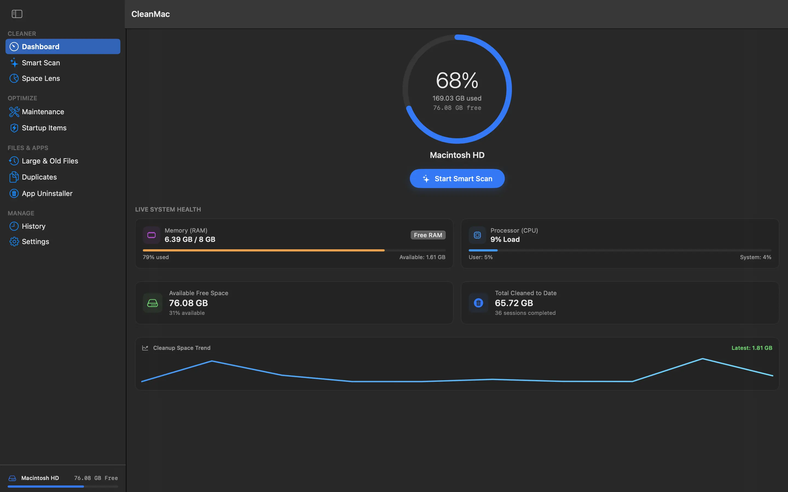
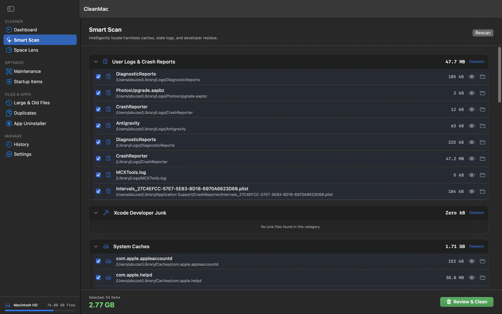
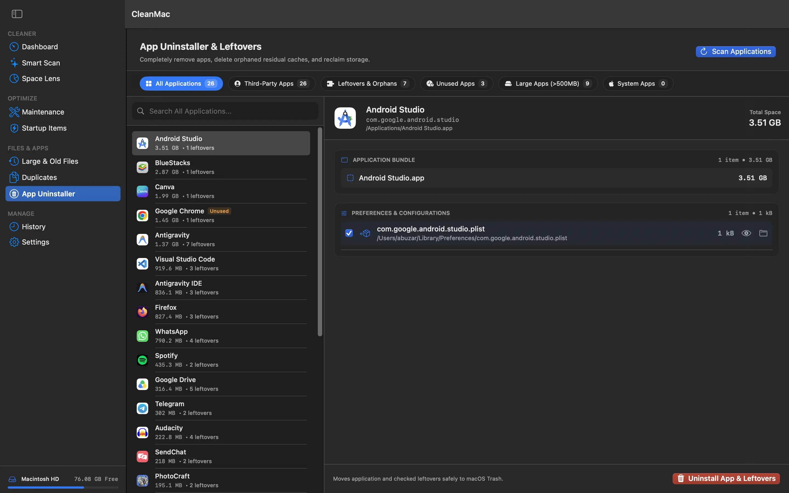
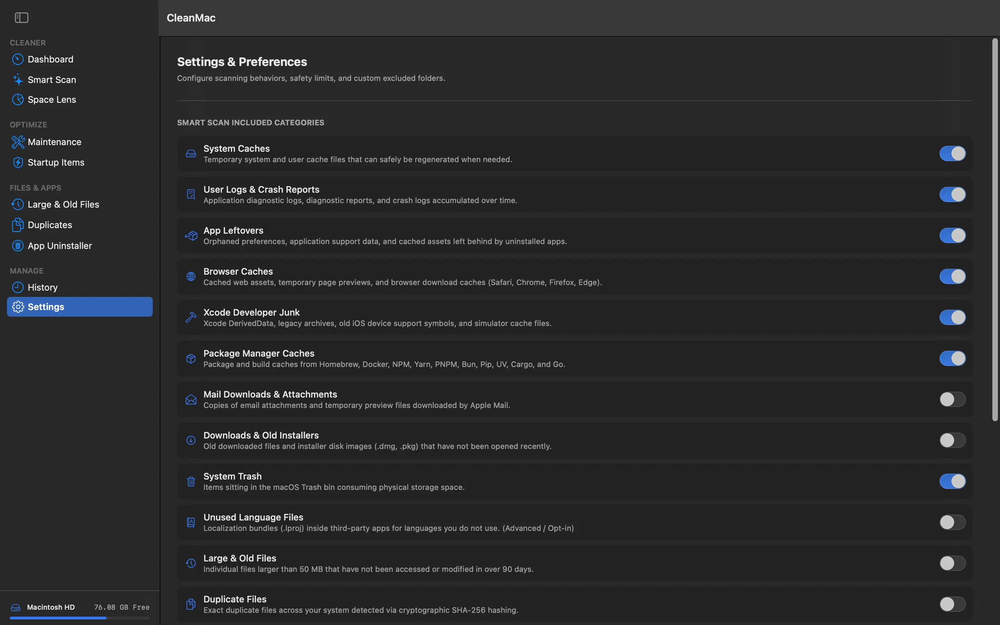

Make room for what matters with CleanMac
A native macOS system cleaner designed to help you reclaim storage, remove app leftovers, find duplicate files, and clean up developer artifacts.
A cleaner Mac, without the clutter.
Find common sources of wasted disk space and tidy up your Mac with focused tools for system and development files.
Reclaim storage
Find files and data you can review to free up valuable space on your Mac.
Remove app leftovers
Clean up leftover files associated with apps to help keep your system tidy.
Find duplicate files
Spot duplicate files taking up room so you can decide what to keep.
Clean developer artifacts
Clear out developer-related artifacts that can accumulate during development.
Take a closer look.
Explore the CleanMac interface and its tools for keeping your Mac tidy.




Explore CleanMac on GitHub
Visit the project repository to learn more, see the source, and follow development.